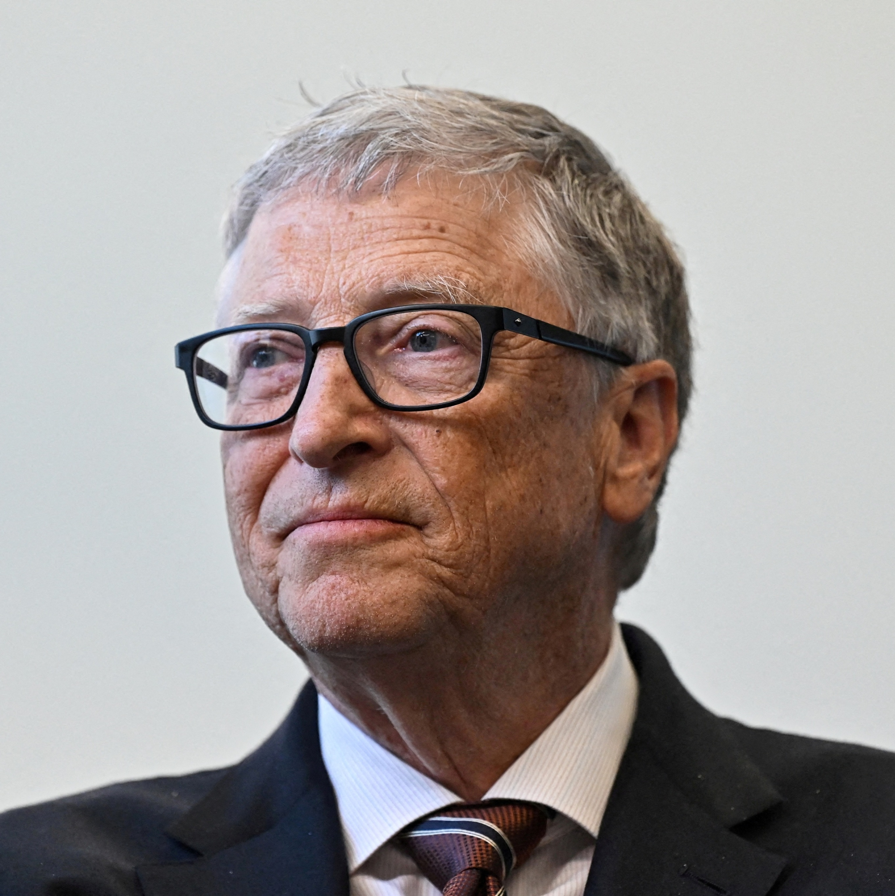
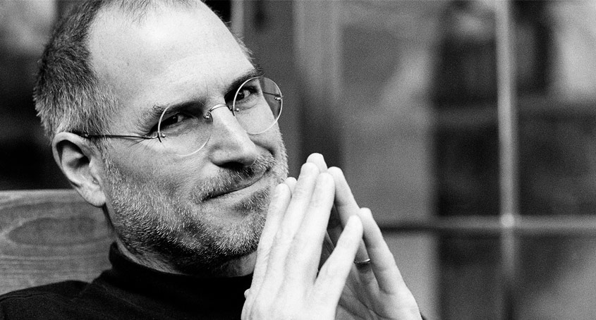

 William Henry "Bill" Gates III KBE • GCIH (Seattle, 28 de outubro de 1955) é um magnata, empresário, diretor executivo, investidor, filantropo e autor norte-americano, que ficou conhecido por fundar, junto com Paul Allen a Microsoft,[2] a maior e mais conhecida empresa de software do mundo em termos de valor de mercado. Gates ocupa atualmente o cargo de presidente não-executivo da Microsoft,[3] além de ser classificado regularmente como a pessoa mais rica do mundo, posição ocupada por ele de 1995 a 2007,[4] 2009,[5] e de 2014 a 2017.[6][7][8][9] É um dos pioneiros na revolução do computador pessoal.
 Steven Paul Jobs (São Francisco, 24 de fevereiro de 1955 – Palo Alto, 5 de outubro de 2011)[2] foi um inventor, empresário e magnata americano no setor da informática. Notabilizou-se como cofundador, presidente e diretor executivo da Apple Inc.[6] e por revolucionar seis indústrias: computadores pessoais, filmes de animação, música, telefones, tablets e publicações digitais.[7] Além de sua ligação com a Apple, foi diretor executivo da empresa de animação por computação gráfica Pixar e acionista individual máximo da The Walt Disney Company.[8] Morreu no dia 5 de outubro de 2011, aos 56 anos de idade, devido a um câncer pancreático.[2] Currículo de Steve Jobs[9] "Estou procurando um lugar que necessite de muitas reformas e consertos, mas que tenha fundações sólidas. Estou disposto a demolir paredes, construir pontes e acender fogueiras. Tenho uma grande experiência, um monte de energia, um pouco dessa coisa de ‘visão’ e não tenho medo de começar do zero". No final da década de 70, Jobs, em parceria com Steve Wozniak e Mike Markkula, entre outros, desenvolveu e comercializou uma das primeiras linhas de computadores pessoais de sucesso, a série Apple II.[6] No começo da década de 1980, ele estava entre os primeiros a perceber o potencial comercial da interface gráfica do usuário guiada pelo Mouse (informática), o que levou à criação do Macintosh.[10]
Linus Benedict Torvalds (Helsínquia, 28 de dezembro de 1969) é um engenheiro de software, nascido na Finlândia e naturalizado estado-unidense em 2010,[1][2] criador, e por muito tempo o desenvolvedor mais importante do núcleo Linux, sendo utilizado em importantes sistemas Linux, Android e Chrome OS. É também o criador do Git, sistema de controle de versão amplamente utilizado, e o aplicativo para planejamento e registro de mergulho, Subsurface.[3] Junto ao médico Shinya Yamanaka, foi honrado pela Academia de Tecnologia da Finlândia, em 2012, com o Prêmio de Tecnologia do Milênio “em reconhecimento à sua criação de um novo núcleo de sistema operacional para computadores, que levou ao extensivamente utilizado, núcleo Linux”.[4] Torvalds também notoriamente recebeu os prêmios: Pioneiro da Computação da IEEE Computer Society,[5] e o IEEE Masaru Ibuka Consumer Electronics Award, patrocinado pela Sony.